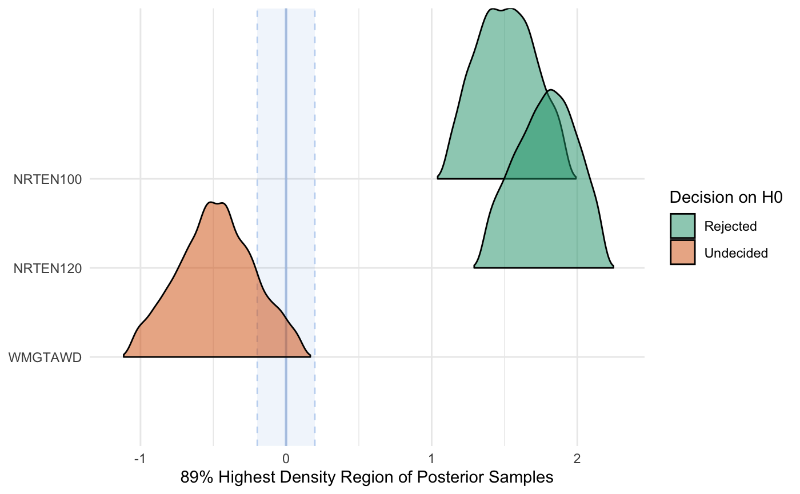

vignettes/a06_2015_LshB_sev_analysis.Rmd
a06_2015_LshB_sev_analysis.RmdFor this analysis, I’ve elected to use rstanarm for a Bayesian analysis. When comparing the treatments in the analysis, the model compares each treatment to the base (control) treatment.
The base levels for this analysis are:
NRTE:0
WMGT:PDL
Load libraries and detect cores.
library("rice.awd.shb") library("rstanarm") library("bayestestR") library("bayesplot") library("ggplot2") library("pander") options(mc.cores = parallel::detectCores())
The AUDPS object is loaded with the rice.awd.shb R package. To see how the AUDPS data were generated from the original raw data, see the vignette detailing the data processing file. However, because it is a tibble() and the treatments exist in a single column for graphing the raw data, this object needs a few minor changes to be usable for the analysis.
Create individual data frames for the analysis.
# create 2015 data frame AUDPS_2015 <- as.data.frame(AUDPS[AUDPS$YEAR == 2015,]) AUDPS_2015 <- droplevels(AUDPS_2015) # relevel factors for easier interpretation of analysis AUDPS_2015 <- within(AUDPS_2015, NRTE <- relevel(NRTE, ref = "N0")) AUDPS_2015 <- within(AUDPS_2015, WMGT <- relevel(WMGT, ref = "PDL"))
Leaf sheath blight severity AUDPS, LShB_percent_AUDPS is the response variable. Water management, WMGT, and nitrogen rate, NRTE, are fixed effects. Replicate, REP, is treated as a random effect.
summary(m3)
##
## Model Info:
## function: stan_lmer
## family: gaussian [identity]
## formula: LShB_percent_AUDPS ~ WMGT + NRTE + (1 | REP)
## algorithm: sampling
## sample: 4000 (posterior sample size)
## priors: see help('prior_summary')
## observations: 120
## groups: REP (4)
##
## Estimates:
## mean sd 10% 50% 90%
## (Intercept) 1.2 1.0 0.1 1.2 2.3
## WMGTAWD -0.5 0.2 -0.7 -0.5 -0.2
## NRTEN100 1.5 0.3 1.2 1.5 1.8
## NRTEN120 1.8 0.3 1.5 1.8 2.1
## b[(Intercept) REP:1] -0.3 1.0 -1.5 -0.3 0.8
## b[(Intercept) REP:2] 2.3 1.0 1.2 2.3 3.5
## b[(Intercept) REP:3] -1.1 1.0 -2.2 -1.1 0.0
## b[(Intercept) REP:4] -0.9 1.0 -2.0 -0.9 0.3
## sigma 1.2 0.1 1.1 1.2 1.3
## Sigma[REP:(Intercept),(Intercept)] 3.8 3.8 1.1 2.6 7.6
##
## Fit Diagnostics:
## mean sd 10% 50% 90%
## mean_PPD 2.1 0.1 1.9 2.1 2.3
##
## The mean_ppd is the sample average posterior predictive distribution of the outcome variable (for details see help('summary.stanreg')).
##
## MCMC diagnostics
## mcse Rhat n_eff
## (Intercept) 0.0 1.0 1014
## WMGTAWD 0.0 1.0 3973
## NRTEN100 0.0 1.0 3144
## NRTEN120 0.0 1.0 3072
## b[(Intercept) REP:1] 0.0 1.0 1005
## b[(Intercept) REP:2] 0.0 1.0 1023
## b[(Intercept) REP:3] 0.0 1.0 1026
## b[(Intercept) REP:4] 0.0 1.0 1043
## sigma 0.0 1.0 3323
## Sigma[REP:(Intercept),(Intercept)] 0.1 1.0 1494
## mean_PPD 0.0 1.0 4115
## log-posterior 0.1 1.0 1324
##
## For each parameter, mcse is Monte Carlo standard error, n_eff is a crude measure of effective sample size, and Rhat is the potential scale reduction factor on split chains (at convergence Rhat=1).et <- equivalence_test(m3) plot(et) + scale_fill_brewer(palette = "Dark2") + theme_minimal()

pander(et)
| Parameter | CI | ROPE_low | ROPE_high | ROPE_Percentage | ROPE_Equivalence |
|---|---|---|---|---|---|
| (Intercept) | 89 | -0.198 | 0.198 | 0.07582 | Undecided |
| WMGTAWD | 89 | -0.198 | 0.198 | 0.05167 | Undecided |
| NRTEN100 | 89 | -0.198 | 0.198 | 0 | Rejected |
| NRTEN120 | 89 | -0.198 | 0.198 | 0 | Rejected |
| HDI_low | HDI_high | Effects | Cleaned_Parameter |
|---|---|---|---|
| -0.2022 | 2.689 | fixed | (Intercept) |
| -0.8055 | -0.1254 | fixed | WMGTAWD |
| 1.103 | 1.928 | fixed | NRTEN100 |
| 1.363 | 2.193 | fixed | NRTEN120 |
Lastly, save the model information to be used in discussing the results.
saveRDS(m3, "../analysis/data/derived_data/LSev15.Rds", compress = "bzip2")